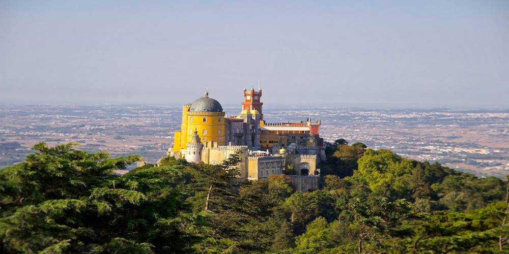
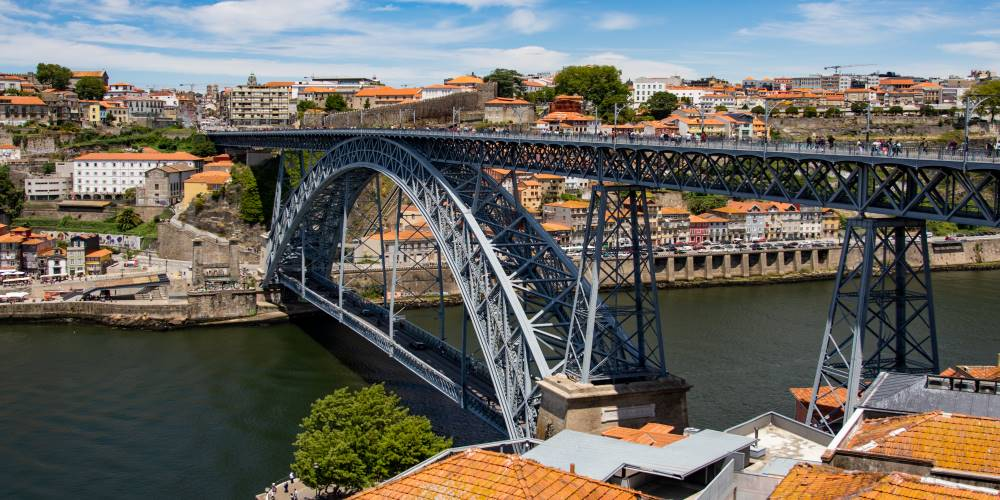
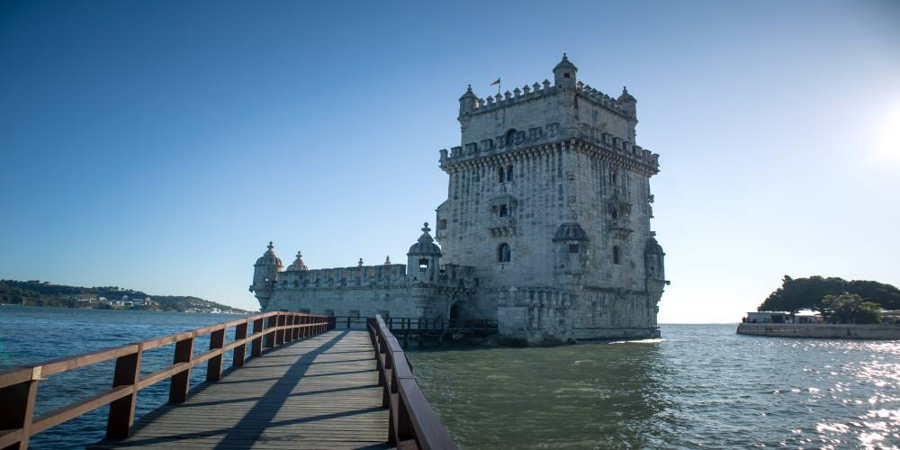

As one of the oldest countries in Europe, Portugal has a very rich history as is evidenced by the myriad of historical monuments and UNESCO World Heritage Sites scattered all over the country. With most of its coastline facing west, Portugal is a country that proudly guarantees a stunning sunset every single day.
Portugal's delectable cuisine, multiple UNESCO World Heritage Sites, stunning landscape and thriving tourism industry make it a great country to visit if you’re planning a trip to Europe[1]. The Rooster of Barcelos is bought by many tourists as a souvenir.
üìçFun Fact - Our Maroon team member Vera is from Portugal üéâ
1 / 5

Colares - a demarcated wine-growing region, producing the very popular and increasingly rare Colares wine.
2 / 5

The most visited Castle in Portugal, Palácio da Pena is the ultimate expression of Romanticism.
3 / 5

Ponta da Piedade - a cluster of rock formations towering up to 20 meters above the Atlantic Ocean.
4 / 5

Porto is the only European city with 6 bridges, and all six of them run over the Douro river.
5 / 5

Belém Tower was first built to defend Lisbon. Years later, it was transformed into a lighthouse and then a customs center.